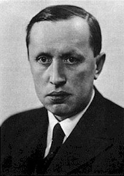
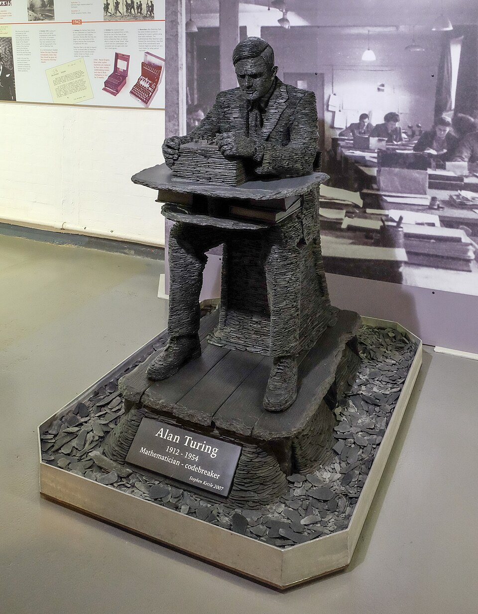
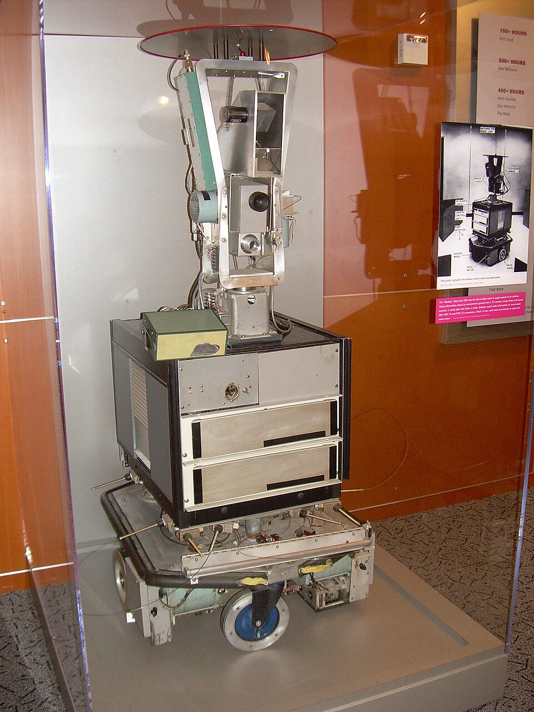
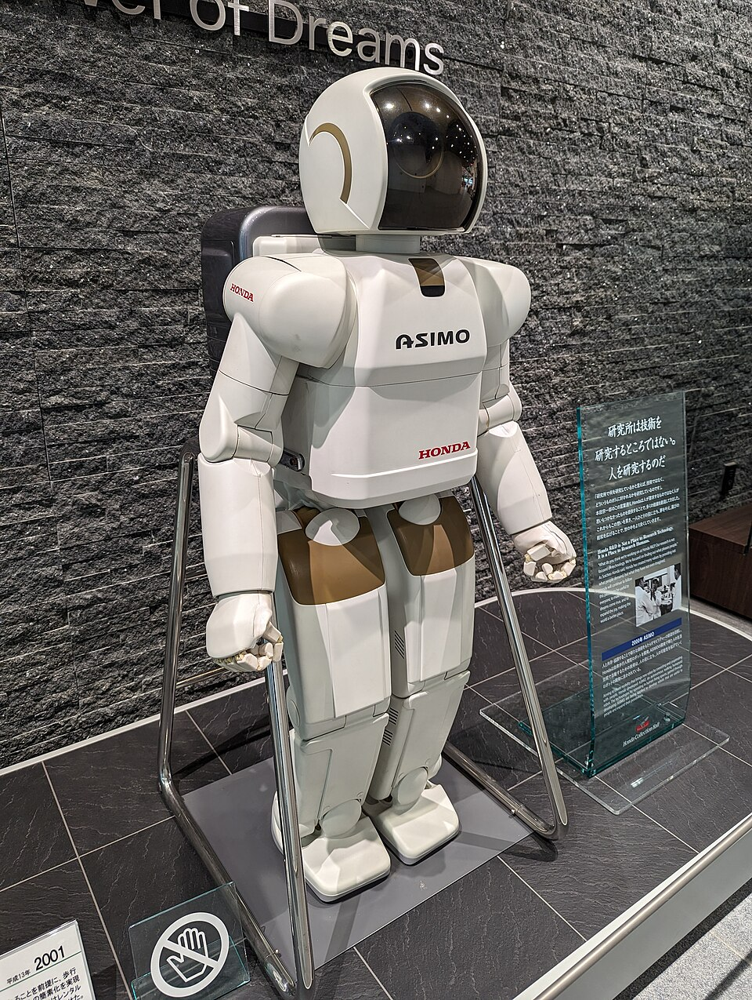
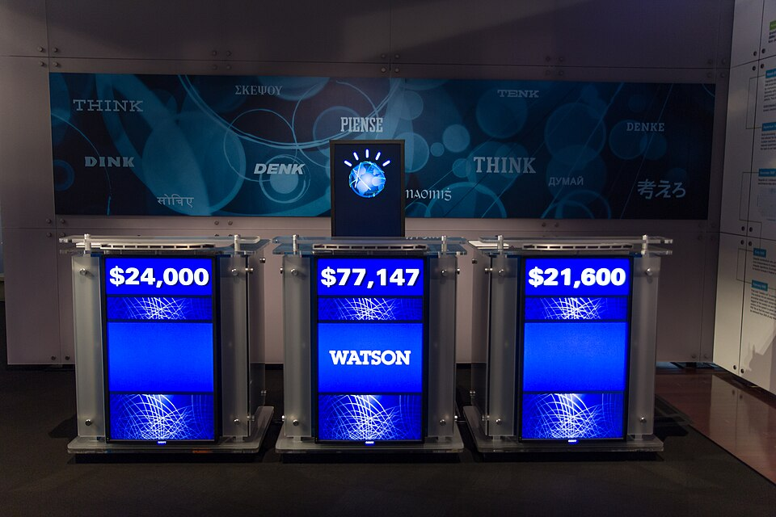

什么是机器人？
机器人是一种能感知周围环境、按程序或人工智能做出决策，并执行物理或数字任务的自动装置。它不一定长得像人——工厂里的机械臂、家里的扫地机，都属于机器人。判断标准不是外形，而是能否自主完成一系列任务。
Basics
在走进历史之前，先弄清机器人是什么、靠什么工作，以及它的核心部件如何协同
机器人是一种能感知周围环境、按程序或人工智能做出决策，并执行物理或数字任务的自动装置。它不一定长得像人——工厂里的机械臂、家里的扫地机，都属于机器人。判断标准不是外形，而是能否自主完成一系列任务。
几乎所有机器人都遵循同一逻辑：感知（摄像头、传感器收集信息）→ 决策（控制器或 AI 分析判断）→ 执行（电机、机械臂完成动作）。三者缺一不可。就像人需要眼睛看路、大脑思考、手脚行动一样。
科幻作家阿西莫夫在小说中提出：机器人不得伤害人类、必须服从人类命令、在不违背前两条的前提下保护自己。虽是文学创作，却深刻影响了大众对机器人伦理的想象。今天各国仍在讨论类似的 AI 安全规范。
摄像头、激光雷达、超声波、力传感器等，是机器人感知世界的「五官」。它们把光线、距离、压力等信息转化为电信号，让机器人知道周围有什么、离障碍物多远、抓取力度是否合适。
芯片与算法组成机器人的「神经中枢」，负责接收传感器数据、运行程序或 AI 模型、发出行动指令。控制器越强大，机器人处理复杂任务的能力就越强。
电机、液压装置、气动系统、机械臂关节等，是把指令变成实际动作的「手脚」。执行器的精度和力量，直接决定了机器人能完成多精细、多繁重的任务。
Waves
百年机器人史，大致可归纳为三次技术浪潮——每一次都让机器人变得更聪明、更有用
以 Unimate 为代表，机器人走进工厂流水线，按预设程序重复焊接、搬运、装配。这一阶段的机器人不会「思考」，但极大提升了工业生产效率。
代表：Unimate 工业机器人传感器和导航算法日趋成熟，机器人开始能「看路、避障、规划路线」。Shakey、Roomba 等产品让机器人走出固定工位，进入实验室和家庭。
代表：Shakey · Roomba深度学习与大语言模型赋能，机器人不仅能执行任务，还能理解自然语言、自主学习新技能。AI 正在成为机器人的「通用大脑」，加速走进更多场景。
代表：AlphaGo · ChatGPTTimeline
从概念诞生到智能时代，这些里程碑事件塑造了今天的机器人世界

捷克剧作家卡雷尔·恰佩克在戏剧《罗素姆的万能机器人》中首次提出「Robot」一词。这个词来自捷克语，原意是「被强迫劳动的人」，从此成为人类描述自动机器的通用词汇。一个文学词汇，最终定义了整个科技领域。

英国数学家艾伦·图灵发表论文，提出著名的「图灵测试」：如果一台机器能让人类无法分辨它是人还是机器，就可以认为它具有智能。这为人工智能研究奠定了理论基础。今天机器人的「聪明程度」，仍在沿用图灵留下的思考框架。
乔治·德沃尔和约瑟夫·英格伯格发明了 Unimate，这是世界上第一台可编程的工业机器人。1961 年，它被安装在美国通用汽车工厂，负责搬运热金属零件，开启了工业自动化的新时代。全球数百万台工业机械臂，都可以追溯到这台机器。

斯坦福大学研发的 Shakey 是首个能感知周围环境、自主规划行动路线的移动机器人。它配备了摄像头和传感器，能在房间里避开障碍物，被认为是早期人工智能机器人的重要代表。今天自动驾驶和扫地机的路径规划，都继承了 Shakey 开创的思路。

IBM 的超级计算机「深蓝」在国际象棋比赛中击败了当时的世界冠军加里·卡斯帕罗夫。这一事件轰动全球，让人们第一次真切感受到：机器在复杂策略任务上已经可以超越人类顶尖选手。它证明「智能」不只属于生物大脑，算法同样可以制胜。
NASA 的火星探路者探测器成功着陆，并释放首辆在火星表面行驶的机器人「旅居者号」。它通过地球远程操控，传回大量地质数据，成为行星探测机器人的里程碑。
首次证明：机器人可以在地球以外的星球上自主探索，为后来的「毅力号」等火星车铺平了道路。

日本本田公司发布了 ASIMO 人形机器人，它能像人类一样双足行走、爬楼梯，还能与人握手、打招呼。ASIMO 让大众看到了人形机器人在日常生活中的可能性，成为机器人领域的标志性产品。此后二十年，人形机器人一直是公众 imagination 的核心符号。
iRobot 公司推出 Roomba 扫地机器人，以亲民价格和实用功能进入普通家庭。它标志着服务机器人不再只属于实验室和工厂，开始真正融入日常生活。
全球售出数千万台，让「机器人」从科幻概念变成了很多人家里的日常用品。

IBM 的超级计算机 Watson 在美国智力问答节目 Jeopardy! 中击败了两位人类冠军。Watson 能理解自然语言问题、快速检索海量知识并给出答案，展示了机器在语言理解和知识推理方面的强大能力。这为后来机器人「听懂人话」的技术路线埋下了伏笔。
DeepMind 的 AlphaGo 在围棋比赛中击败世界冠军李世石。深度学习在复杂决策上的突破，为机器人「大脑」提供了全新思路——机器可以自主学习，而不只是执行预设程序。
围棋的复杂程度远超国际象棋，这一胜利让 AI 在「直觉判断」上的潜力被广泛认可。
OpenAI 发布 ChatGPT，大语言模型以对话方式走进大众生活。人们开始畅想：当机器人拥有「大脑」般的语言能力，它们将如何改变工厂、家庭、医疗和教育？AI 与机器人的融合进入了前所未有的加速期。
大语言模型正在重塑机器人「感知—决策—交互」的完整链路，这一章节仍在书写中。
Figure、特斯拉 Optimus 等公司密集发布人形机器人进展，通用人形机器人成为科技界焦点。业界开始认真讨论：人形机器人能否进入工厂、仓库乃至家庭，承担真正的劳动任务？
与大语言模型结合后，人形机器人首次具备了「听懂指令、理解场景」的能力，商业化讨论真正升温。
Pioneers
机器人百年史背后，有几位关键人物值得记住——他们定义了词汇、发明了机器、奠定了理论
1920 年，捷克剧作家恰佩克在戏剧《罗素姆的万能机器人》中首次使用「Robot」一词。这个词来自捷克语「robota」，意为强迫劳动，却成为人类描述自动机器的通用词汇，影响至今。
见时间线 · 19201954 年，德沃尔申请了可编程机械臂专利，英格伯格将其商业化，共同创造出世界上第一台工业机器人 Unimate。英格伯格因此被誉为「工业机器人之父」，推动了全球制造业的自动化革命。
见时间线 · 19541950 年，图灵发表论文提出「图灵测试」，探讨机器能否表现出与人类无法区分的智能。这一思想实验成为人工智能研究的起点，也为今天机器人「是否聪明」的讨论提供了衡量框架。
见时间线 · 1950阿西莫夫在科幻小说中提出「机器人三定律」，探讨机器与人类的关系边界。虽是文学创作，却深刻影响了大众对机器人伦理的想象，至今仍是 AI 安全讨论的文化参照。
见认识机器人 · 三定律Types
了解历史和关键人物之后，再来看看今天的机器人有哪些类型，各自应用在哪些场景
在工厂里承担重复、高精度的作业，全天候稳定运行，是制造业自动化的主力。它们通常固定在产线上，按程序循环执行焊接、搬运、喷涂等任务。
汽车、电子、食品等行业是工业机器人最广泛的应用领域，一台机械臂可以 24 小时不间断工作，大幅提升产能与一致性。
代表案例：汽车焊接产线上的 ABB 机械臂
焊接 · 搬运 · 喷涂直接为人提供服务，包括接待引导、配送物品、清洁环境等，越来越常见于商业和公共场所。它们的设计重点是安全、友好和易用。
疫情期间，送餐机器人和消毒机器人在医院、商场大量部署，加速了服务机器人的普及进程。
代表案例：酒店大堂引导机器人、餐厅送餐机器人
酒店引导 · 餐厅送餐辅助医生完成精密手术，或帮助患者进行康复训练，在提升疗效的同时减轻医护负担。手术机器人的精度可达亚毫米级，远超人手极限。
康复机器人则通过重复性训练帮助中风患者恢复肢体功能，让康复过程更科学、更省力。
代表案例：达芬奇（Da Vinci）微创手术系统
达芬奇手术系统模仿人类的身体形态与动作方式，便于在为人类设计的环境中活动——走楼梯、开门、使用人类工具都不需要改造环境。
当前人形机器人仍处于研发早期，但结合大语言模型后，它们有望听懂自然语言指令，成为通用劳动力的候选者。
代表案例：本田 ASIMO、特斯拉 Optimus
ASIMO · Optimus能在空间中自主移动，完成货物搬运、仓储分拣或家庭清扫，是「会走路的」机器人代表。它们依赖激光雷达和 SLAM 算法实现自主导航。
电商仓储中，成百上千台 AGV 小车在货架间穿梭分拣，已成为现代物流的核心基础设施。
代表案例：iRobot Roomba、亚马逊 Kiva 仓储机器人
扫地机 · 仓储 AGV专为极端环境设计，代替人类进入高温、深海、太空或灾区等危险场所执行探测与救援任务。可靠性是这类机器人的第一要求。
福岛核事故后，多台探测机器人进入高辐射区域作业；深海机器人在万米海沟采集样本，拓展了人类探索的边界。
代表案例：NASA 毅力号火星车、福岛核事故探测机器人
火星车 · 水下探测Future
机器人技术日新月异，机遇与挑战并存
大语言模型让机器人能听懂自然语言指令，无需专业编程即可完成任务。AI 正在成为机器人的「通用大脑」，大幅降低使用门槛。
多个领域面临人力短缺，机器人有望成为重要的补充力量，让人类专注于更有创造力的工作。
技术进步必须与社会讨论同步推进，才能确保机器人真正造福人类，而非带来新风险。
协作机器人（Cobot）专为与人类并肩工作而设计，遇到人会自动减速或停止，强调「辅助而非替代」。
机器人从文学想象走来，历经百年成为现实。理解它的过去，才能更清醒地参与塑造它的未来——这不是机器的独角戏，而是人类与机器共同书写的下一章。
About
本网站是一份面向初学者的机器人科普页面，用通俗易懂的语言带你了解机器人是什么、有哪些类型、经历了哪些重要里程碑，以及未来将走向何方。无论你是第一次接触这个话题，还是想系统梳理机器人知识，都可以从这里开始。
推荐阅读路线：认识机器人（基础概念与核心部件）→ 技术三浪潮（宏观脉络）→ 时间线（重要里程碑）→ 代表人物（背后的关键人物）→ 类型应用（今天的机器人）→ 未来与思考（机遇与挑战）。